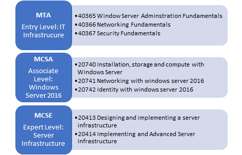

The following information is a plan for me to follow to achieve the first four criterion
| Item | Description |
|---|---|
| #1 | Minimum 5 years IT technical service delivery experience |
| This will take 5 years after I graduate, start working and gaining experience in the IT technical service delivery. | |
| #2 | Skills and experience with Microsoft technologies: Windows Sever 2008 through 2016 and Windows 7 through 10 |
| Over the next three years I will undertake the Microsoft Windows Server training and obtain the MTA, MCSA and MCSE certifications listed below.  | |
| #3 | In depth experience with some of the following technologies: Active Directory, Office 365, Azure, SQL, Intune, Microsoft Remote Desktop, Veeam Backup and replication, Sophos EPP, Mimecast and Hyper-V. |
| For items 3 and 4 I will have to undertake individual training modules to achieve these qualifications, this could take some years. | |
| #4 | Familiar with routing and switching technologies, across both WAN and LAN environments. |
| Same as item 3 |